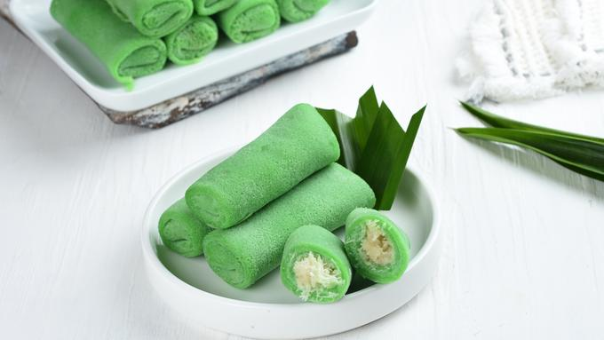

Bahan
200 gram terigu
1 butir telur
500 ml air
1/2 sdm gula
1/4 sdt garam
Sedikit vanili
25 gram tepung miszena
Gula pasir secukupnya
250 ml santan
1 kuning telur
1/2 sdt vanili
20 gram cokelat bubuk dilarutkan
proses memasak
- Pertama, kita buat kulit terlebih dahulu. Masukkan tepung terigu, garam, gula, kemudian aduk hingga menyatu. Masukkan air dan telur dan aduk sampai rata..
- Buat kulit pada wajan datar yang dioles margarin. Ketebalan kulit bisa Anda sesuaikan dengan selera. Yang pasti karena digulung, kulit akan menebal nantinya..
- Buat vla dengan mencampur maizena, kuning telur dan sebagian santan. Aduk sampai rata dan sisihkan.
- Campurkan santan, gula, garam dan cokelat bubuk. Masak hingga mendidih. Matikan api, masukkan vanili, kemudian masukkan larutan mizena sambil diaduk sampai vla mengental. Diamkan sejenak..
- Siapkan kulit dadar dan maskkan vla, kemudian gulung sesuai kreasi Anda. Ulangi sampai kulit habis.
|

|